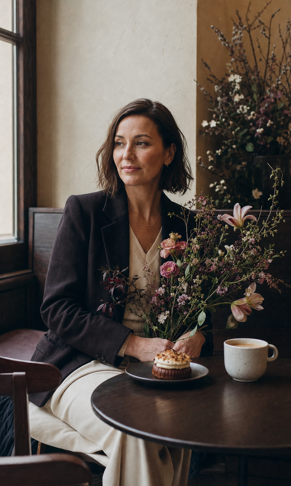

REFERENCELacy Bird
Sells by occasion and emotion: a date, a birthday, a declaration, a thoughtful gesture.
Use: emotional collections FOR DOROTA
FOR DOROTAA NEW DIGITAL SALES CHANNEL
WHAT OTHERS SHOW US
Sells by occasion and emotion: a date, a birthday, a declaration, a thoughtful gesture.
Use: emotional collectionsShows the basic mechanics of online shopping, but leaves space for a more premium experience.
Opportunity: stronger art directionStrong on same-day delivery, social proof, multilingual shopping and choosing a delivery window.
Differentiate: the café experienceNot “another Warsaw florist” — the place where flowers become a complete moment.
SCHEMATIC PREVIEW
bouquet + two coffees + dessert

WANTSA beautiful, thoughtful gift that feels personal.
VALUESQuality, aesthetics and an effortless mobile purchase.
NEEDSTo see the bouquet, know the price and book a time immediately.
FLOWERSThis is the idea competitors cannot copy authentically.
05 / 10FOUR SIMPLE STEPS
Bouquet or occasion set.
Add coffee, dessert and a note.
Select an available pickup time.
Confirm securely online.
COMPLETE E-COMMERCE EXPERIENCE
01HomeStory, signature products, café concept
02ShopUp to 20 products and occasion sets
03Product pagesPhotos, sizes, add-ons, notes
04Online calendarDate and pickup time booking
05Cart & paymentStripe / P24 / PayU / Tpay
06Custom orderIndividual bouquet enquiry
07About & contactStory, location and opening hours
08Google setupIndexing and local SEO foundations
09PL · EN · RURussian included as a free bonus
KEEPING THE FIRST STEP SIMPLE
Customers reserve an available pickup time in the online calendar.
After you agree terms with a local courier, we add delivery zones, prices and schedules.
Use Stripe or a Polish provider: Przelewy24, PayU or Tpay. Direct bank acquiring requires an agreement with your bank.
External costs: domain, hosting, provider fees, photography, optional paid tools and future courier charges.
08 / 10A SHOP IS A LIVING SYSTEM
Technical updates · backups · security checks · payment and calendar monitoring · agreed small content and catalogue updates.
Products change. Software updates. Seasonal offers appear. Monthly care keeps the shop secure, accurate and ready to sell.
09 / 10Full project value€6,000
Team discount− €1,000
Special price because Nurlana is part of your team.
Russian website version included free to reach Warsaw’s Russian-speaking community.
Remaining balance can be paid in instalments according to an agreed schedule.
Questions? I’m always happy to talk.
Back to WhatsApp →